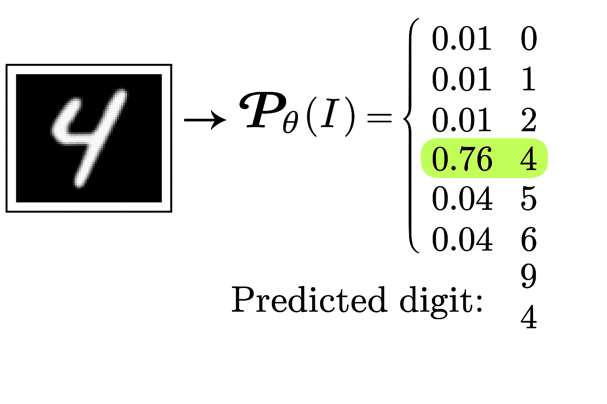

A Framework for Artificial Intelligece and Machine Learning
Khiem Nguyen
Lecturer in Multiscale Materials
khiem.nguyen@glasgow.ac.uk
ChatGPT from OpenAI is built on top of PyTorch, which provides necessary functionality for traning and running deep neural networks like GPT-3.5 model.
The codebase for ChatGPT is written in Python, the langage used to create models and application logic.
The project also utilizes other PyTroch-related librarie, such as transformers from Hugging Face, which provides high-level APIs for building and training transformer-based models
torch as any other libraries:array([[1, 2],
[3, 4]])array([[1, 2],
[3, 4]])array([[0.71480771, 0.99168951, 0.36535747, 0.61651811],
[0.78192397, 0.16779443, 0.46335248, 0.77237384],
[0.79123457, 0.07051603, 0.2662378 , 0.83924688]])a + b = array([5, 7, 9])
a - b = array([-3, -3, -3])
a * b = array([ 4, 10, 18])
a / b = array([0.25, 0.4 , 0.5 ])
a.dot(b) = np.int64(32)a + b = tensor([5, 7, 9])
a - b = tensor([-3, -3, -3])
a * b = tensor([ 4, 10, 18])
a / b = tensor([0.2500, 0.4000, 0.5000])
a.dot(b) = 32a @ b =
tensor([[ 6., 6., 6., 6.],
[15., 15., 15., 15.]])
a @ b =
tensor([[ 6., 6., 6., 6.],
[15., 15., 15., 15.]])dot only works for one-dimensional tensor--------------------------------------------------------------------------- RuntimeError Traceback (most recent call last) Cell In[15], line 3 1 a = torch.tensor([[1.0, 2, 3], [4, 5, 6]]) # note "1.0", instead of just "1" 2 b = torch.ones(size=(3, 4)) ----> 3 a.dot(b) RuntimeError: 1D tensors expected, but got 2D and 2D tensors
tensor([[1., 2., 3.],
[4., 5., 6.],
[7., 8., 9.]]).item()Why do we need PyTorch in the first place if it is so much similar to NumPy?
We study how autograd collects gradients via a simple example: We want to compute the gradient of \(\nabla f(\mathbf{x})\) of the following function \[
f(\mathbf{x}) = f(a, b) = 3 a^2 - b^2, \qquad \mathbf{x} = (a, b)
\]
Repeat: We want to compute the gradient \(\nabla f\) of the following function: \[ f(\mathbf{x}) = 3 a^2 - 2 a b + b^2, \qquad \mathbf{x} = (a, b) \]
.backward() on the variable f, autograd calculates the gradient \(\nabla f\) at \((1, 2)\) and \((3, 4)\) and stores them in the respective tensors .grad attribute.a.grad = tensor([ 2., 10.])
b.grad = tensor([2., 2.])Mathematical idea:
To minimize a function, we can use the gradient descent method
In this gradient descent method, we need to compute the gradient of the cost function \(\mathcal{L}(\theta)\)
In other words, we need to compute the partial derivative of \(\mathcal{L}\) with respect to all the parameters \(\theta\).
The computation of these partial deritives involves extremely complex mathematical formulation.
Autograd from
torchhelps us to compute the such partial derivatives easily.